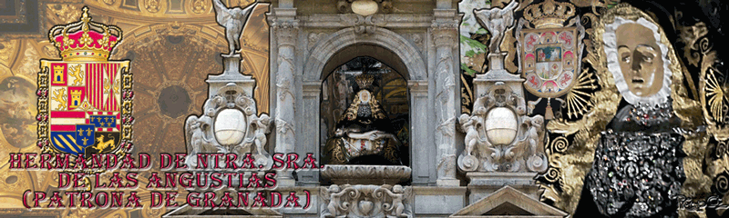

Menu
Hermandad
Saludo del Hermano Mayor
Junta de Gobierno
Composición de la Hermandad
Avisos Generales
Reflexión Mensual
Contactos
Imagen Patronal
Nuestra Señora de las Angustias
Otras Imagenes
Cultos
Misa Dominical
Cultos Mensuales
Cultos de Septiembre
Procesion Patronal
Otros
Horquilleros
Ser Horquillero
Junta Directiva
Avisos
Breve Historia
Palieros
Ser Paliero
Junta Directiva
Avisos
Breve Historia
Hermanas Cofrades
Ser Hermana Cofrade
Junta Directiva
Avisos
Breve Historia
Gestión
Avisos Secretaria
Avisos de Tesoreria
Impresos para Descargar
Protocolo
Nuestras Constituciones
Grupo Joven
Convocatorias
Actividades
Devoción sin Fronteras
Testimonios recibidos
Virgen de las Angustias de la Caridad
Informaciones curiosas
Oraciones
Menu
Obra Social
Como hacer aportaciones
Convocatorias
Campaña de Alimentos
Servicios de acogida
Asesoramiento por profesionales
Economato Solidario
Museo
Breve Guia
Visita al museo
Certamen de Pintura
Pinturas ganadoras
Bases del Certamen
Archivo
Consultas de Archivo
Documento del Mes
Estudiar y Conservar
Revista de Septiembre
Historia
Arte
Voluntariado
Quiero Ser Voluntario
Convocatorias
Servicios de Voluntariado
Formación
Programa Anual
Charlas de Formación
Grupo de Confimación
Otros
Especiales
Centenario Coronación
Imagenes
Galeria de Carteles
Imagenes del Ayer
Reportajes Especiales
La Virgen de las Angustias y Granada
Estamos en:
Tweets por @AngustiasGr
Boletin Digital
Solicitud para recibir el boletin Digital
Pulsa
Tienda Virtual